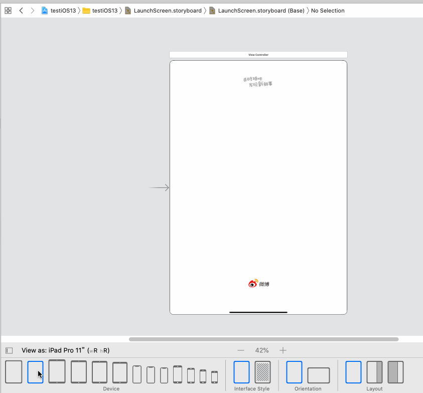
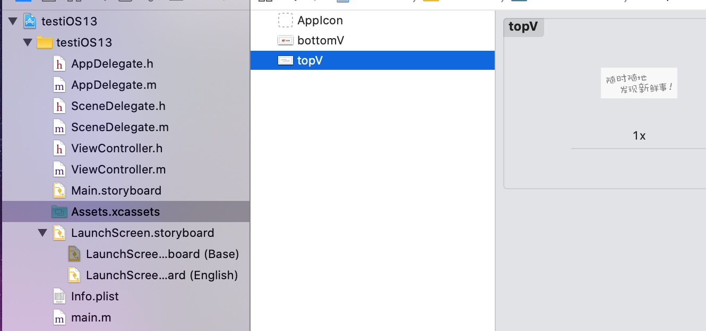
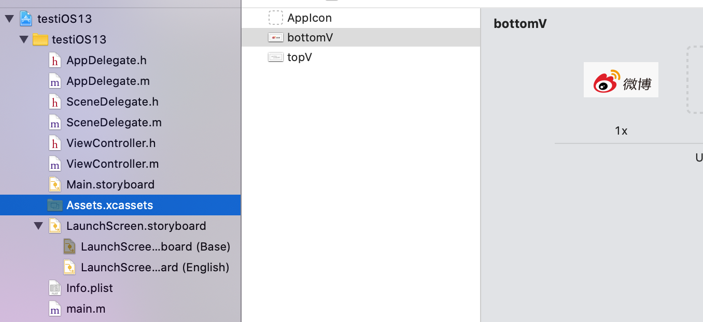
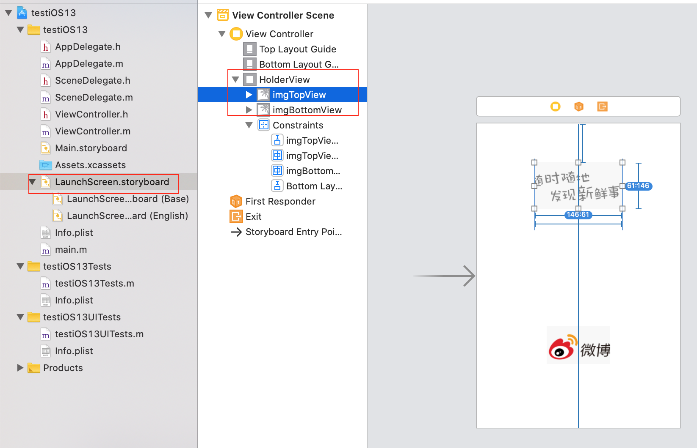
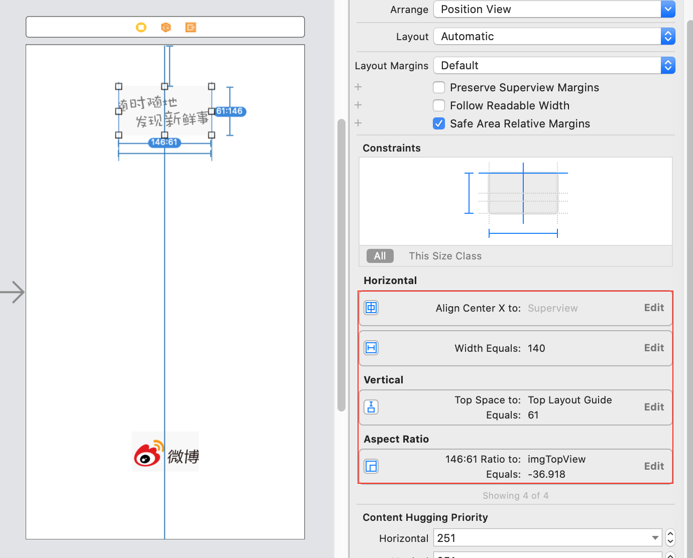
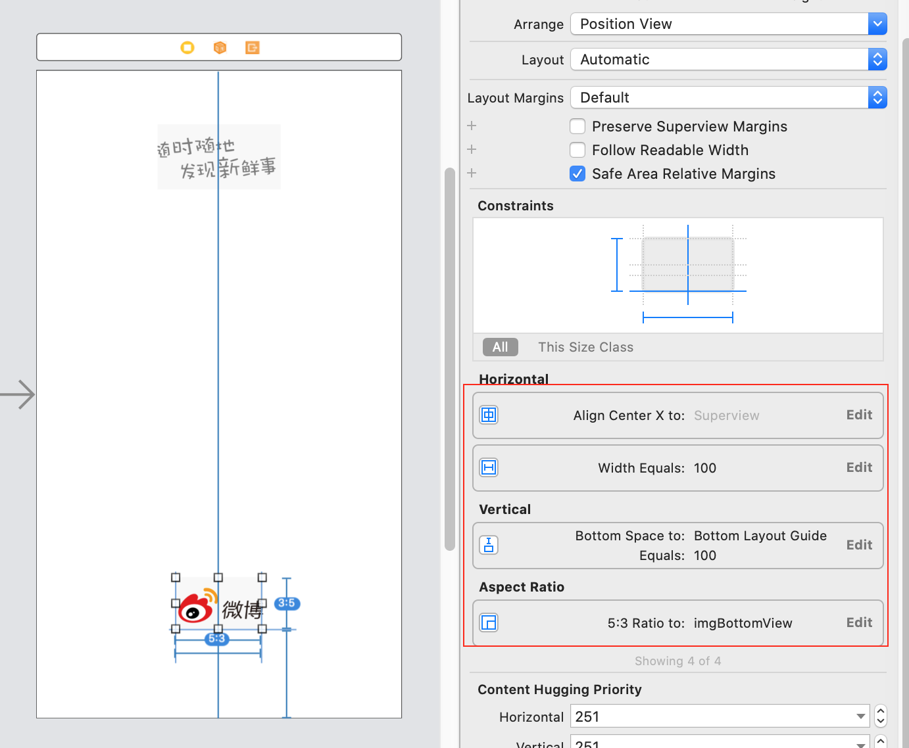

之前有写一篇实现方式比较简单的随笔用launchscreen.storyboard适配启动图方法，顺便在评论区提了一下用autolayout适配启动图的思路，现把思路和流程记录下来。
整体思路：打破启动图一定是一张固定图的思维定势，把启动图当做普通页面去适配。用UIView做容器，在里面添加不同的图片部件。然后用autolayout进行布局。
缺点：较麻烦，需要UI配合，对启动图不同部件分别给图和约定图片相对位置和尺寸（固定/屏幕百分比等）






个人感觉用launchscreen.storyboard适配启动图的话，目前好像之前那种针对不同机型设置不同启动图的方法了。如有类似方法，欢迎评论指正。